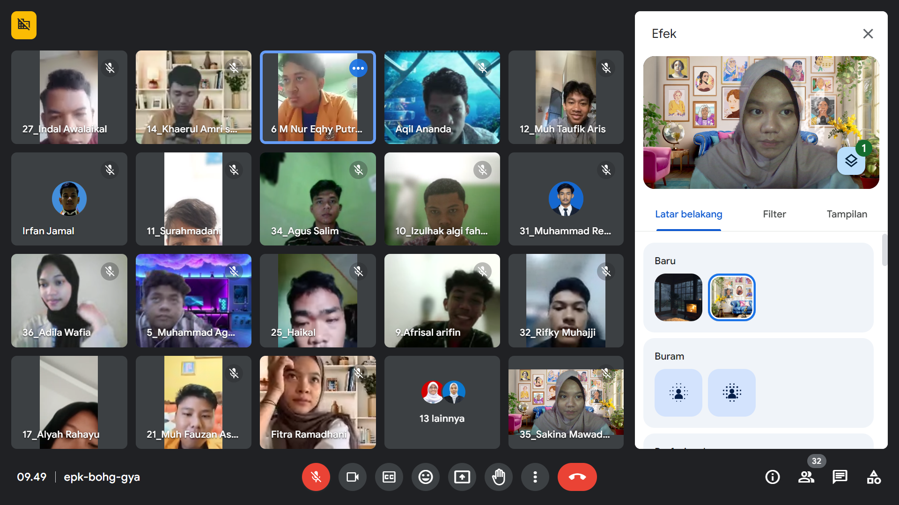

Pengenalan Diri
Nama: Sakina Mawaddah
NIM: 230209502034
Kelas: PTIK F 2023
Alamat: Labakkang
Alamat: Jln. Toddopuli 1, Rappocini, Kota Makassar
Asal Sekolah: SMA NEGERI 1 PANGKEP
Universitas Negeri Makassar
[Bersyukur Setiap Hari]
Pengalaman Selama Mengikuti Perkuliahan di PTIK
|
|
Pengalaman saya selama menjadi Mahasiswi di PTIK di satu setengah tahun ini, saya belajar sangat banyak salah satunya yaitu cara mendidik dan mengasah kemampuan coding. Saya juga banyak terlibat proyek atau tugas kelompok yang mengajarkan pentingnya kerja sama tim dan komunikasi yang efektif.
|
Daftar Mata Kuliah yang Telah Dipelajari
Pengantar Kependidikan
Bahasa Inggris
Komputer Grafis
Komunikasi Data
|
Daftar Dosen
- > Ibu Dwi Rezky Anandari Sulaiman, S.Psi, M.Si
- > Ibu Dr. Sanatang, S.Pd, M.T
- > Bapak Wahyu Hidayat M, S.Pd, M.Pd
|
Tabel Teman Dekat
| No |
Nama |
Jenis Kelamin |
Alamat |
Asal Sekolah |
Nama Panggilan |
| 1 |
NurHikmah Muhtar |
Perempuan |
Jl. Dg Tata 1 |
SMAN 3 BUNGORO |
Imma |
| 2 |
Alyah Rahayu |
Perempuan |
Jl. Tamangapa |
SMKN 1 KOLAKA |
Ayuu |
| 3 |
Nurul Ilmi |
Perempuan |
Katangka |
SMA PESANTREN PUTRI IMMIM MINASATE'NE PANGKEP |
Ilmy |
Foto Diri/Foto Kegiatan

![[Deskripsi Foto]](PTIK F.jpg)
| |